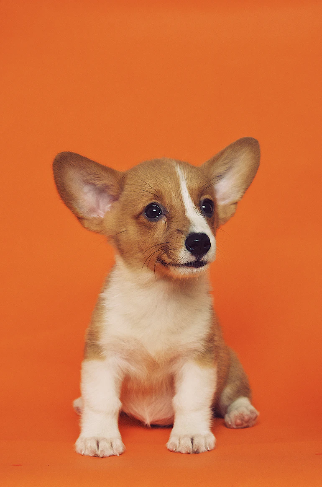

태어난 강아지는 생후 10일까지를 출생견으로 본다. 강아지는 견종에 따라 체중이 매우 다양하며 태어난 지 14일 무렵 눈을 뜨고 소리에 반응하며 걷기 시작한다.몸떨기 반사는 그보다 1주일 정도 빠르다. 젖 빨기는 첫 2주간은 2시간마다 이루어지며 8일 만에 몸무게가 약 두 배로 늘어나는 등 빠르게 성장한다.이 기간엔 따로 마련한 출산장에서 강아지의 관리를 전적으로 어미개에게 맡기는 것이 좋다. 강아지가 자신의 몸을 부들부들 떠는 몸떨기 반사는 체온을 유지하기 위한 자연스러운 반응이다.
강아지는 생후 3주에서 3개월에 걸쳐 한 배에서 나온 강아지들과 어미, 사람들과 사회적 관계를 맺는 이행기를 거친다. 이 시기 강아지들에겐 나중에 어미나 같이 태어난 강아지와 떨어져 홀로 살아갈 앞날을 위해 다른 동물들과 마주치는 훈련등 사회화가 필요하다.